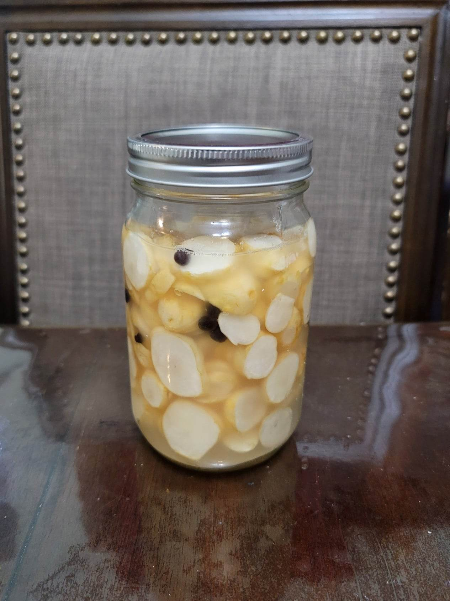

Pickled Sunchokes

Ingredients:
- 1-2 lb Sunchokes, cut into thick coins, enough to fill a 1 quart jar
- Water, as needed
- Sea salt, as needed for a 2.5% brine
- 10 Juniper berries
Instructions:
- Weigh the jar before adding anything. Then add the sunchokes, juniper berries, and water to cover and weigh again. Take the difference in the weights and multiply it by 0.025. Add this amount of salt to the jar and shake to combine.
- Ensure everything is submerged and loosely cover. Let ferment in a dark, room-temperature location for 5-7 days or to taste. Then serve immediately or transfer to a fridge.